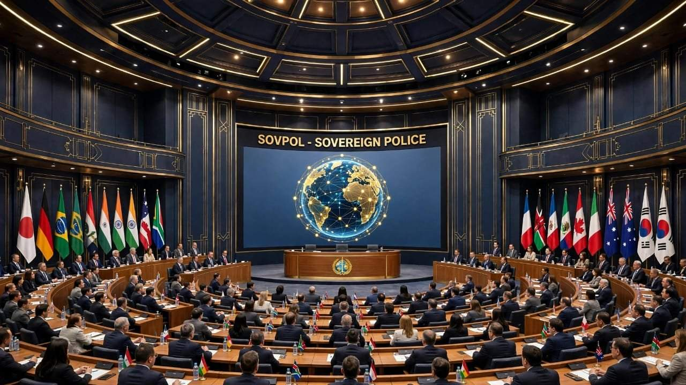
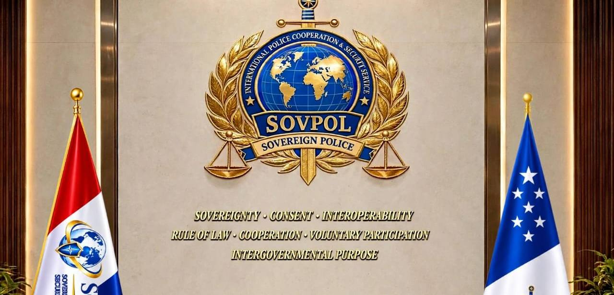
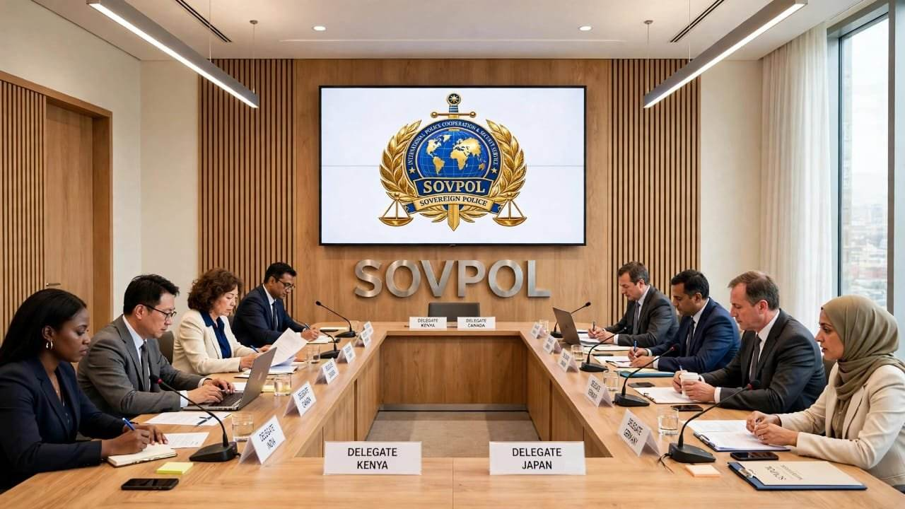
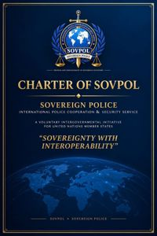
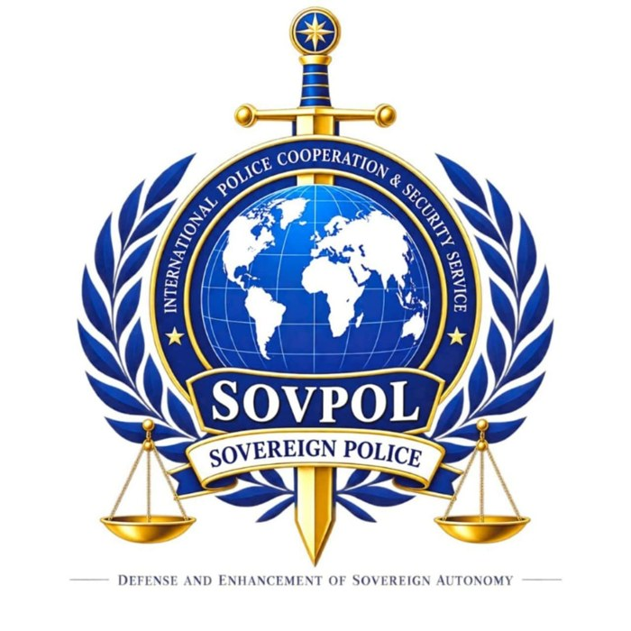
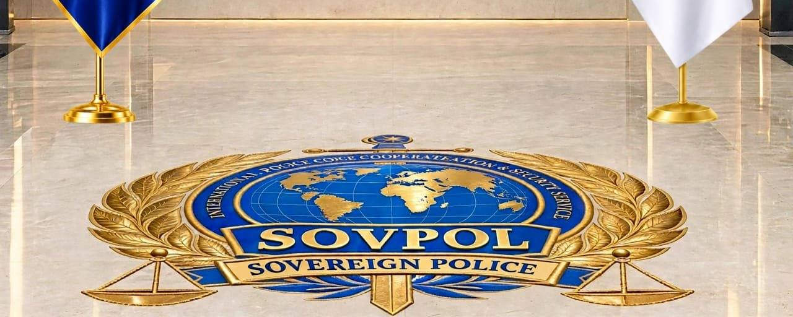
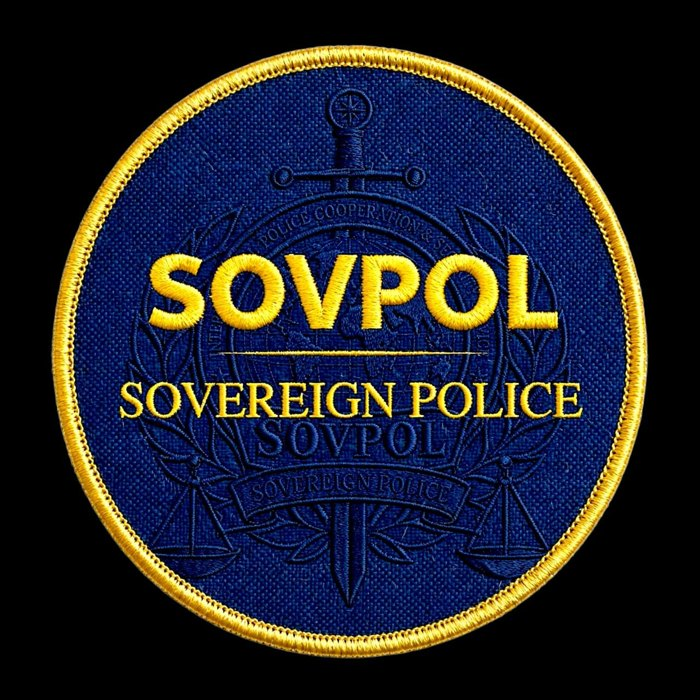

Police cooperation that begins with consent.
SOVPOL is a proposed voluntary framework that would let national police and security institutions work across borders while keeping their own law, courts and command. It is offered to governments for consideration and assumes no government’s consent.
SOVPOL is an indigenous Nigerian initiative: a proposed voluntary intergovernmental framework for international police cooperation among interested UN Member States.
The Sovereign Cooperative Security Architecture (SCSA) connects national police and security institutions through consent and shared standards, not through a new authority above them. States keep their legal identity, constitution and jurisdiction, and gain a structured channel for cooperation.
SOVPOL would complement INTERPOL, UN Police, UNODC, AFRIPOL, Europol and ASEANAPOL, and does not claim to replace or rank above any of them.
A voluntary architecture
To advance a voluntary intergovernmental architecture for sovereign police cooperation, fostering collaboration, interoperability and collective security among interested UN Member States.
A structured framework
To develop a framework through which sovereign states may explore, facilitate and strengthen police cooperation, based on mutual consent, sovereign equality, institutional integrity and applicable international obligations.
Independence and cooperation
Sovereign independence and international cooperation are complementary, and can advance collective security without weakening a state’s constitutional and territorial authority.
How the architecture is arranged
Let no power become greater than the law, and let no law become empty of humanity.
SOVPOL Executive Diplomatic BriefFive foundational principles
They shape the proposed 39-Article Charter. Article numbers are from the proposed Charter.
Sovereignty with interoperability
States keep their legal identity and authority while connecting their capabilities.
Consent and jurisdiction
Cooperation rests on specific consent and respect for each state’s jurisdiction.
Permanent non-invasion
SOVPOL shall not invade, occupy, annex or overthrow the government of a sovereign state.
Lawful action sequence
Law, then jurisdiction, then consent, then necessity, proportionality and accountability.
Representation is not authority
Representing SOVPOL does not confer police authority on anyone.
Complementarity
Cooperation with existing institutions, never replacement of them.
Seven proposed objectives
Each would apply only with legal authorisation and the consent of the states involved. They are proposals, not existing powers.
Intergovernmental police cooperation
Structured cooperation among interested governments and their competent policing authorities.
Sovereign security coordination
Mutually agreed approaches that respect national sovereignty and jurisdiction.
International police liaison
Mechanisms for communication, coordination and professional exchange.
Standards and capacity development
Training, institutional development, knowledge exchange and responsible policing.
Integrity and accountability
Ethical standards, transparency and professional responsibility.
Human security and public protection
Community protection, public-safety education and the protection of human dignity.
Diplomatic engagement
A framework for dialogue with governments, regional bodies and international institutions.
The proposal, pictured
Concept imagery of the bodies and symbols the Charter describes.







How decisions would be made
Sequences from the proposed Charter. Urgency alone never creates legal authority.
The lawful action sequence
The police cooperation doctrine
Where circumstances permit, prevention, investigation, professional cooperation and capacity-building come before coercive measures.
Safeguards for extraordinary collective action
The Charter also requires ratification by at least one-third of the participating states entitled to take part in the decision. That threshold does not itself create legal authority where other authorisation is needed.
Proposed institutional architecture
Eight components that could be built if governments choose to take the proposal forward. Arrangements are under development.
Intergovernmental Council
The deliberative core of participating states.
Police Cooperation and Coordination
International liaison among national police institutions.
Sovereign Security Cooperation
Mutually agreed security collaboration.
Regional Cooperation Structures
Working with regional organisations and arrangements.
Professional Standards and Development
Training, certification and standards.
Integrity and Accountability
Independent review, audit and complaints.
Human Security and Community Protection
Public safety, education and protection of dignity.
International Relations Coordination
Diplomatic coordination with states and institutions.
Governance, safeguards and participation
How the proposed institution would be held to account.
Assembly of Participating States
The proposed supreme constitutional authority. It safeguards sovereign equality and sets strategic direction.
Professional Secretariat
Supports administration and carries out duly adopted decisions. No executive office exceeds what the Charter confers.
Independent mechanisms
Professional standards, legal and ethical review, financial audit, complaints, inspection and accountability.
Financial integrity
No financial contribution can purchase political, constitutional or operational control.
Human oversight of technology
AI, biometrics and cyber tools stay subject to legality, necessity, proportionality, privacy, human oversight and auditability.
Human dignity
Due process, equality before the law, civilian protection, no torture and no arbitrary detention.
Ways a state could take part
Participation is open to sovereign states willing to accept the Charter. Legal consequences arise only to the extent a state expressly accepts them.
Four limits written into the proposal
What SOVPOL says it will never do, in the Charter’s own terms.
Consent is specific.
Membership is not blanket consent. Operations need agreement on mandate, territory, personnel, powers, duration and purpose.
Permanent non-invasion.
SOVPOL shall not invade, occupy, annex or overthrow the government of a sovereign state. No emergency or order suspends this.
Representation is not authority.
A SOVPOL title, uniform or credential does not confer police, military, judicial, diplomatic or governmental authority.
Force is a last resort.
Any authorised operation needs a written mandate, human-rights safeguards, and necessity, proportionality and accountability.
Not to govern humanity, but to serve humanity. Not to dominate states, but to help states cooperate.
The Humanity ClauseBeside existing institutions, not above them
| INTERPOL | International police cooperation and criminal police information exchange |
|---|---|
| UN Police | Policing within UN peace-operation mandates |
| UNODC | Crime prevention, criminal justice policy and technical assistance |
| AFRIPOL, Europol, ASEANAPOL | Regional police cooperation for Africa, the EU and ASEAN |
| National police | Domestic law enforcement and national jurisdiction, which SOVPOL does not displace |
SOVPOL is not a UN organ, agency or subsidiary body, and does not describe itself as one. Its posture toward other states: respect for sovereignty, mutual consent, national legal systems, territorial jurisdiction and non-interference.
Nigeria as country of origin
The conviction behind SOVPOL is that African nations have the capacity to originate meaningful international frameworks.
Nigeria is the proposed country of origin, and a prospective founding state only if its own authorities decide so through their constitutional and legal processes. SOVPOL recognises Nigeria’s sovereign authority over any participation, support or hosting arrangement.
Institutional status
The facts as stated in SOVPOL’s own documents, without rounding up.
| Name | SOVPOL — Sovereign Police |
|---|---|
| Designation | International Police Cooperation & Security Service |
| Character | Proposed voluntary intergovernmental initiative |
| Country of origin | Federal Republic of Nigeria |
| Intended participation | UN Member States |
| Institutional status | In formation |
| Governing framework | Proposed 39-Article Charter |
| Registration | In progress; not yet registered |
| Membership | Not yet constituted |
| Governmental recognition | Not yet obtained |
| Independent police powers | None claimed |
| Institutional architecture | Under development |
Six steps, in this order
Standing would come only through government and intergovernmental processes.
- National consultationTalks with Nigerian police, security, justice and foreign-affairs authorities.
- Diplomatic introductionPresenting the concept to interested governments and institutions.
- Intergovernmental consultationExploring legal character, structure and areas of cooperation.
- State-led considerationInterested states decide how any negotiation proceeds.
- Formal establishmentOnly through an international instrument and national approvals.
- Institutional engagementRelationships with other organisations, after lawful establishment.
Long-term aspirations
- Advance the Sovereign Cooperative Security Architecture as an international cooperation principle
- Encourage voluntary participation by interested UN Member States
- Develop institutional mechanisms for international police cooperation
- Promote security coordination and interoperability
- Encourage professional standards and capacity development
- Strengthen international dialogue on human security
- Support constructive cooperation with existing international and regional institutions
Questions, answered plainly
A proposed voluntary framework for police and security cooperation among sovereign states. It starts from a Nigerian initiative and is offered to governments for consideration.
No. It claims no independent police powers. The idea is to help national police institutions cooperate, while each keeps its own law, courts and command.
No. It does not describe itself as a UN organ or agency, and has no UN affiliation. It aims to complement INTERPOL, UN Police, UNODC and regional bodies, not replace them.
No. No operational activity may take place in a state’s territory without legally sufficient consent from the competent authority. Membership alone is never consent.
Voluntarily, through its own governmental and constitutional processes, in any of the participation categories above. Legal consequences arise only as far as the state accepts them.
The initiative is in formation. Registration is in progress but not yet completed, membership is not yet constituted, and governmental recognition has not been obtained.
Tunde Atayeshe Owolabi, as Convener and Initiator, with Nigeria as the proposed country of origin. See the founder’s page.
Sovereignty provides the foundation. Consent provides the authority. Law provides the boundary.
The foundational doctrineThe founder
Tunde Atayeshe Owolabi is the convener and initiator of SOVPOL and the principal architect of its Charter and Sovereign Cooperative Security Architecture.
Read the founding documents
Write to the convener
Government offices, police and security institutions, and international organisations are invited to request the documents, give legal observations, or open a consultation.
Tunde Atayeshe Owolabi
Convener / Initiator, SOVPOL — Sovereign Police
Country of origin proposed: Federal Republic of Nigeria
sovpolsovereignsecurity@gmail.com
+234 808 888 0627 · +234 807 492 8906